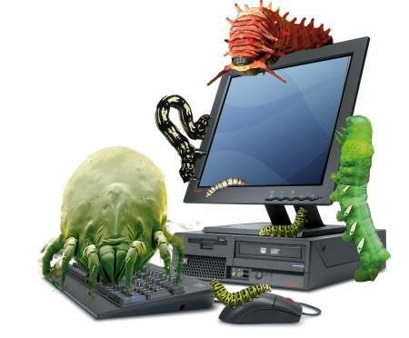
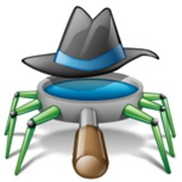

Herramientas
Otras descargas
Novedades
Harry Potter no tiene competidores a la vista...
www.systechsoluciones.com.ar
Aca encontrará algunas herramientas que utilizamos.
Para un diagnostico rápido antes de consultarnos, acá dejamos algunas herramientas de facil descarga y facil instalación. Cualquier herramienta que necesite, la solicita y colgamos un link.
Firewall
Un firewall es un dispositivo que funciona como cortafuegos entre redes, permitiendo o denegando las transmisiones de una red a la otra. Un uso típico es situarlo entre una red local y la red Internet, como dispositivo de seguridad para evitar que los intrusos puedan acceder a información confidencial.

Antivirus
Un virus informático es un malware que tiene por objeto alterar el normal funcionamiento de la computadora, sin el permiso o el conocimiento del usuario. Los virus, habitualmente, reemplazan archivos ejecutables por otros infectados con el código de este. Los virus pueden destruir, de manera intencionada, los datos almacenados en un ordenador, aunque también existen otros más inofensivos, que solo se caracterizan por ser molestos.

Antispywares
Los Spywares o archivos espías son unas diminutas aplicaciones cuyo objetivo es el envío de datos del sistema donde están instalados, mediante la utilización subrepticia de la conexión a la red, a un lugar exterior, el cual por lo general resulta ser una empresa de publicidad de Internet. Estas acciones son llevadas a cabo sin el conocimiento del usuario.
Tools
Existen varios tipos de herramientas, de muy facil acceso y sin necesidad de conocimiento tecnico, se utilizan para la optiomizacion del sistema, eliminar archivos basura, desfragmentar archivos de nuestra computadora, etc...